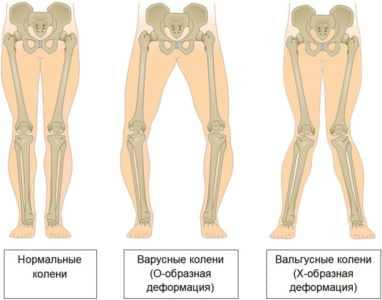
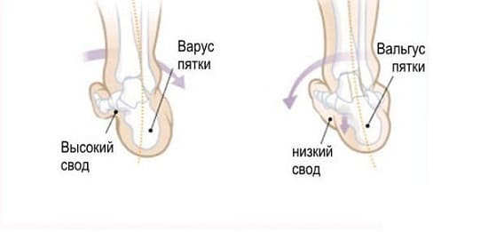
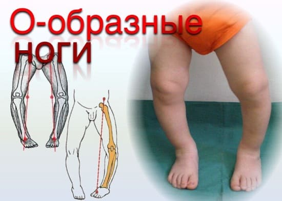
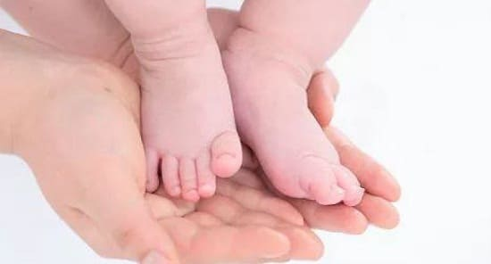
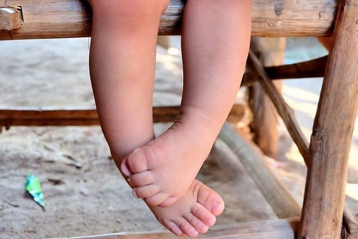
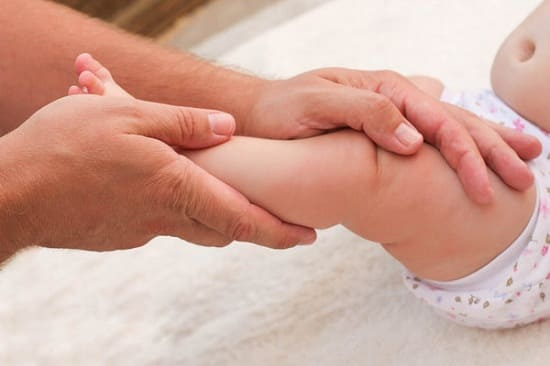

Впервые годы жизни с растущими ступнями и ногами происходит множество изменений. Большинство младенцев рождаются с кривыми ногами и стопами, повернутыми внутрь. Это искривление постепенно выпрямляется, когда ребенок начинает ходить. Однако у некоторых сохраняется аномальная кривизна, известная под общим названием «кривые ноги», «косолапость». Вот наше руководство, которое поможет вам определить наличие этого отклонения строения нижних конечностей и когда нужна консультация врача. Описание некоторых проблем, связанных с ногами.
ВАРУСНЫЕ СТОПЫ
Иногда у младенцев ноги прямые, но стопы загнуты внутрь. Фактически у большинства новорожденных стопы загнуты опять же из-за согнутого положения в матке (помните прелестные изображения, полученные на УЗИ?).
ЛЕЧЕНИЕ
Младенцам полезны специальные упражнения на вытяжение. Минимум 6 раз в день, при каждом пеленании, крепко возьмитесь одной рукой за стопу со стороны тыла, а другой — за переднюю часть голени и постепенно мягко распрямите ногу. Удерживайте ее в таком положении не меньше пяти секунд. Обычно кривые стопы выпрямляются к шестимесячному возрасту. Если стопы младенца остаются повернутыми внутрь в четыре-шесть месяцев, можно использовать специальную ортопедическую обувь, пока ребенок не начнет ходить. Обычно этого достаточно для коррекции этого состояния. Иногда назначают кратковременное ношение специальных колодок, помогающих, ставить ноги ровно. Хирургическое вмешательство необходимо в очень редких случаях.
КОГДА ВОЛНОВАТЬСЯ И ЧТО ДЕЛАТЬ
Вот как можно определить, является ли кривизна ног вашего младенца нормальной и они выпрямятся со временем, или ему необходимо ортопедическое лечение. Одной рукой охватите ногу ребенка сзади вокруг голеностопного сустава, а второй — за тыл стопы. Удерживая ногу сзади, попытайтесь выровнять ее спереди. Если вам удалось выпрямить ногу, нежно нажимая на тыльную поверхность стопы, скорее всего, это нормальное искривление ног новорожденного, не требующее лечения и самостоятельно исправляющееся со временем. Но если вам не удается выпрямить ногу или вы замечаете другой признак — глубокую складку на подошве перед пяткой, где стопа искривляется внутрь, то эта аномалия развития — косолапость — нуждается в консультации детского ортопеда.
Существуют различные степени косолапости. Некоторые можно безболезненно исправить с помощью специальных колодок: пластиковые колодки, напоминающие маленькие белые ботиночки, надеваются на ноги ребенка и меняются каждые несколько недель. При каждой смене колодки ноги малыша становятся ровнее. После колодок ребенок несколько месяцев носит специальную обувь (от обычной она отличается тем, что трудно отличить правый ботинок от левого — они выпрямляют или выгибают ногу в противоположном на правлении), чтобы удерживать ноги в прямом положении. Еще один признак косолапости — обычно искривляется только одна нога, в то время как при нормальных «искривлениях из-за позы» обычно искривлены обе ноги или стопы.

О-ОБРАЗНЫЕ НОГИ
О-образные ноги — так называют состояние, когда колени ребенка расходятся при касающихся друг друга стопах. Все младенцы рождаются несколько кривоногими из-за положения тела в матке. Кривые ноги младенцев обычно начинают самостоятельно выравниваться между двенадцатым и восемнадцатым месяцами жизни, когда ребенок начинает ходить и на ноги приходится его вес.
КОГДА ВОЛНОВАТЬСЯ И ЧТО ДЕЛАТЬ
Почти все случаи кривых ног «лечатся» простым наблюдением за тем, как растет младенец. Более существенное лечение необходимо только в очень тяжелых случаях.
В редких случаях кривые ноги могут быть признаком рахита — дефицита витамина D. У детей с рахитом кривизна ног более выражена. Если врач подозревает, что у вашего ребенка рахит, он назначит анализ для определения количества кальция в крови. |
Если у вашего ребенка наблюдаются следующие признаки и симптомы, то это тот редкий случай, когда необходимы рентгенография и дальнейшее лечение:
При необходимости прибегают к хирургической коррекции деформации, если она сохраняется до пубертатного периода. Отдаленный прогноз О-образной деформации ног обычно очень хороший, так как это состояние со временем самостоятельно выправляется у подавляющего большинства детей.

КОСОЛАПОСТЬ (СХОДЯЩИЕСЯ НОСКИ)
«Косолапый» — так говорят о младенцах и детях, у которых носки стоп повернуты внутрь или они ходят, переваливаясь как медвежата. Все новорожденные приходят в этот мир косолапыми, потому что их ноги провели много месяцев согнутыми в матке. Доктор Роберт Сэлтер, написавший книгу о детских ногах, учил нас: «Младенцы рождаются косолапыми из-за того, что в матке невозможно вытянуть ноги!» Эта преходящая особенность развития обычно исправляется к двум-трем годам. Дети могут косолапить из-за искривления двух отделов ноги: искривления внутрь костей голени — это называют большеберцовым вывихом, или из-за изгиба внутрь бедренной кости — бедренное смещение вперед. Поскольку изменения ног влекут за собой изменения стоп, то и кривые ноги приводят к искривлению стоп. Обнаружено, что эти аномалии имеют генетическую предопределенность и могут встречаться в отдельных семьях.
ПРИЧИНЫ
Вывернутые голени (вывих большеберцовых костей). Причины косолапости — задержка развития стоп в эмбриональном периоде. После рождения ноги начинают медленно выпрямляться. Вывернутые голени встречаются, когда большеберцовая кость искривляется вовнутрь. Это влечет за собой такой же поворот стоп. Коленный сустав будет направлен прямо вперед, но голень изогнется вовнутрь. Обычно родители замечают это, когда ребенок начинает ходить. Часто их беспокойство вызвано опасением, что это приведет к затруднениям ходьбы или нарушениям координации в дальнейшем.
Искривление (смещение вперед) бедренной кости. Искривление бедренной кости происходит, когда она поворачивается вовнутрь. Это состояние может оставаться незамеченным до двух-шестилетнего возраста. Все младенцы рождаются с определенной степенью смещения бедренной кости вперед. Обычно это исчезает в течение первых двух лет жизни.
Чтобы определить, отчего у вашего ребенка носки повернуты внутрь — из-за искривления большеберцовой или бедренной кости, — посмотрите, как он стоит. Если надколенники повернуты друг к другу — так называемые «целующиеся надколенники» — скорее всего, это смещение бедренной кости вперед. Если же надколенники направлены вперед, то поворот носков вовнутрь, вероятно, происходит из-за вывиха большеберцовой кости. |
От вышеописанных причин косолапости смещение бедренной кости отличается тем, что при этом и колени, и стопы повернуты внутрь. Опять же, обычно это незаметно, пока ребенок не начнет ходить. Так как на самостоятельное исправление этого состояния могут потребоваться годы, многие родители переживают, если их пяти-шестилетний ребенок косолапит.

ЛЕЧЕНИЕ
Хорошие новости: почти все случаи косолапости проходят самостоятельно. Этот процесс может быть медленным, часто улучшения незаметны, пока ребенку не исполнится шесть- восемь лет. Но даже в случаях, когда для улучшения требуется несколько лет, фиксация, колодки и специальная обувь не слишком полезны. Обычно единственное необходимое лечение — это время. В очень редких случаях, когда искривление настолько выражено, что мешает ходить, может быть проведена хирургическая коррекция, чтобы повернуть кости голени наружу и обеспечить прямую постановку стоп. К счастью, чаще всего в операции нет необходимости.
КОГДА ВОЛНОВАТЬСЯ И ЧТО ДЕЛАТЬ
Хотя все, кто начинает ходить, много падают, при нормальном ходе развития и став старше, малыши падают меньше. Если ваш косолапящий малыш падает больше, обязательно расскажите об этом врачу. Второе, что должно обеспокоить, — хромота. Хромота — всегда причина для всестороннего обследования.
Хотя правда в том, что большинство детей «перерастут» искривления ног и стоп, но вот что могут сделать родители, чтобы помочь растущим ножкам стать ровнее.
Не давайте спать на животе. В первые девять месяцев сон на спине — самая безопасная позиция для предупреждения синдрома внезапной младенческой смерти . Не позволяйте своему младенцу спать на животике с поджатыми ногами: сон в такой позе — самая частая причина искривления ног и стойкой косолапости. В нашей практике мы наблюдали не скольких малышей, постоянно спавших на животе. Все старания заставить их спать с прямыми ногами потерпели неудачу. В качестве последнего средства сработало вот что: мы советовали матерям укладывать этих младенцев спать в пижаме со сшитыми штанинами, таким образом, дети не могли перевернуться — по крайней мере до тех пор, пока они не привыкли спать на спине или на боку с выпрямленными или лишь слегка согнутыми ногами. Если ваш ребенок убежден, что на животе спать лучше, прежде чем самой отправиться спать, вытяните его ноги из-под него.
Сядь красиво! Некоторые малыши и дети постарше любят сидеть на пятках, скрестив под собой стопы. Это способствует искривлению костей голени. Вместо этого учите детей сидеть, скрестив ноги на уровне голеней. Сидение со сведенными вовнутрь бедрами и раздвинутыми голенями может вызвать стойкое искривление бедренных костей. Кроме того, это двойной вред для коленных суставов, поскольку растягивает их связки и усиливает вид «целующихся надколенников». Опять же, сидеть с выпрямленными ногами, или по-турецки, или в позе портного полезно для исправления «целующихся надколенников», косолапости или любого другого искривления костей ног. Сидение и сон с прямыми ногами — следствие усвоения урока природы: из кривого прута вырастет кривое дерево. Поскольку ребенок растет в основном во время сна, то, если он будет спать с ногами, изогнутыми вовнутрь, эти маленькие «прутики», скорее всего, будут расти так же и дальше.
Поднимите свод стопы. Дети с плоскими, вывернутыми наружу стопами скоро понимают, что, если ногу повернуть вовнутрь, она образует дугу и тогда будет легче идти. Возможно, утешением послужит то, что многие успешные спортсмены косолапят и прекрасно бегают. Действительно, некоторые тренеры считают, что косолапость дает преимущество в видах спорта, где надо быстро бегать и поворачивать, таких как футбол, баскетбол, теннис.

ВЫВЕРНУТЫЕ НОСКИ
Как ясно из названия, вывернутые носки — противоположность сходящимся носкам. Это происходит, если голени и стопы повернуты наружу, вместо того чтобы стоять прямо или вовнутрь. Вывернутые носки часто замечают родители, когда ребенок начинает ходить.
СОВЕТ ДОКТОРОВ СИРС: НЕТ ПАДЕНИЙ, НЕТ ВОЛНЕНИЙ Как общее правило: если ваш ребенок не часто падает при обычных ходьбе и беге, косолапость не будет его беспокоить, и не стоит из-за этого переживать. Косолапят многие известные бегуны. |
ПРИЧИНЫ
Хотя и не так часто, как сходящиеся носки, это довольно часто встречается в нашей практике. Вывернутые носки, как правило, результат избыточного поворота костей голени наружу. Это обычно начинается, когда ребенок еще находится в матке — из-за недостатка места на протяжении девяти месяцев.
ЛЕЧЕНИЕ
В подавляющем большинстве случаев вывернутые носки самостоятельно со временем медленно выпрямляются. В норме, когда ребенок начинает ходить, стопы начинают поворачиваться вовнутрь, становясь в более прямую позицию. Это может занять много времени, однако полностью исправляется к шести-восьми годам. Дальнейшее лечение бывает необходимо в очень редких случаях. Обратитесь к своему врачу, если у вашего ребенка наблюдаются какие- либо из следующих симптомов:
Очень редко бывает нужно хирургическое вмешательство, чтобы исправить причины искривлений ног.

Здоровье ребенка от докторов Сирс / Сирс У. и др.